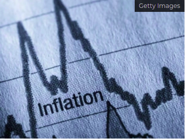
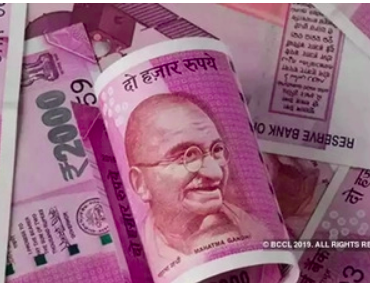

Ecomomics Updates
Only a goods supplier can apply for GST advance ruling
The Maharashtra bench of the GST Authority for Advance Rulings (AAR) has rejected an application filed by a private company saying it was not the supplier of goods or services, but the recipient. Two conditions must be fulfilled in order to file an advance ruling application, both of which were not
Inflation, high oil prices temporary phenomenon; Senior officials
Inflation driven by high crude oil prices is a temporary phenomenon and the economy is gradually opening with both public and private investments picking up, senior government officials said on Friday. The tourism and travel sector, which has been the worst hit, is also recovering gradually with international travel with some of the countries opening up, they added.
Real estate sector to touch $1 trillion by 2030: Kant
The real estate sector plays a multiplier effect in the development of the economy and is expected to reach a market size of USD 1 trillion by 2030, accounting for 18-20 per cent of India's GDP, Niti Aayog CEO Amitabh Kant said on Friday. Virtually addressing an event organised by industry body CII, Kant further said the last 18 months have been challenging for India and the economy in general, and the real estate
Forex reserves up by USD 1.492 billion to USD 641 billion
The country's foreign exchange reserves rose by USD 1.492 billion to reach USD 641.008 billion in the week ended October 15, RBI data showed on Friday. In the previous week ended October 8, the reserves had increased by USD 2.039 billion to USD 639.516 billion. The reserves had touched a lifetime high of USD 642.453 billion in the week ended September 3, 2021.
India's strong external position to keep taper tantrum at bay
Foreign investors have remained net investors in Indian markets since the FOMC minutes were out last Tuesday where Fed has been more vocal about the taper-Bond buy back. Various data points like the armoury country's forex reserves and import cover of reserves- even as global prices are rising- are much better than during the taper tantrum of 2013. Hence taper tantrums would be kept at bay.
CBDT issues refunds of Rs 92,961 cr to 63.23 lakh taxpayers
"CBDT issues refunds of over Rs 92,961 crore to more than 63.23 lakh taxpayers from April 1, 2021 to October 18, 2021. Income tax refunds of Rs. 23,026 crore have been issued in 61,53,231 cases and corporate tax refunds of Rs. 69,934 crore have been issued in 1,69,355 case," the Income Tax department tweeted